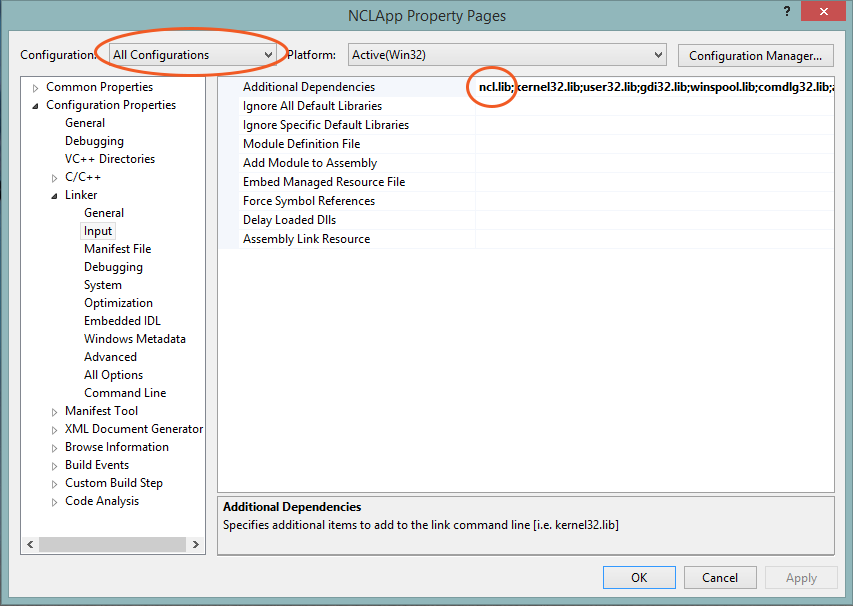

View instructions for:
Visual Studio 2012
Eclipse Android
Xcode (OS X)
Xcode (iOS)
Visual Studio 2012
- Get ncl.h, ncl.lib, and ncl.dll from the SDK and put them somewhere on your device. You could put them in a common location for all projects to use, or somewhere for just this project.
- Open Visual Studio 2012. Open your existing project or create a new one.
- In the Solution Explorer, right-click on the project you want to talk with Nymis and select Properties.
- On the window that pops up, click on the drop-down menu at the top labelled Configuration and select "All Configurations". Do this for the other platforms if you have multiple.
- On the navigation pane on the left, expand Configuration Properties.
- Open VC++ Directories. In the next steps, try to use relative paths as opposed to absolute ones. $(ProjectDir) is useful for indicating the current project directory.
- Add the directory in which you put ncl.h to Include Directories.
- Add the directory in which you put ncl.lib to Library Directories.
- Expand Linker. Click on Input. Add ncl.lib to Additional Dependencies.

- In the same pop-up window, expand Debugging.
- In Environment, add the directory in which you put ncl.dll to PATH. For example,
PATH=/nclDllDirectory;PATH%
Note that the environment will be different in deployment; ncl.dll should be put next to the executable or installed into a common DLL location.
Ecplise (Android)
Ecplise (Android)
- Get nclSDK.jar and armeabi folder from the SDK and put them somewhere on your device. You could put them in a common location for all projects to use, or somewhere for just this project.
- Open Ecplise. Open your existing project or create a new one.
- Go to your project Properties. Select 'Java Build Path' on the left of the window. Select the Libraries tab and 'Add External JARS..'. Find and add nclSDK.jar
- Drag the armeabi folder into your projects 'libs' folder
- In your project Manifest, add Internet permission <uses-permission android:name="android.permission.INTERNET" />
Xcode (OS X)
- Get ncl.h and libNCL.dylib from the SDK and put them somewhere on your device. You could put them in a common location for all projects to use, or somewhere for just this project.
- Open Xcode. Open your existing project or create a new one.
- In the Build Settings of the project or target you want to talk with Nymis, add the directory in which you put ncl.h to Header Search Paths. For example, if ncl.h is next to the theProject.xcodeproj, you could add "." (the current directory).
- Drag libNCL.dylib into your project. If you want to avoid absolute paths, make sure the paths added to your target/project are relative.
- In the Build Phases of the target you want to talk with Nymis, in Copy Files, select Executables as a Destination, clear the subpath, make sure "Copy only when installing" is unselected and add libNCL.dylib.
- In the Build Settings of the project or target you want to talk with Nymis, add "." (the current directory) to Runpath Search Paths . This and the previous step can be modified to change how the dylib is used.
Xcode (iOS)
- Get ncl.h and libNCLiOS.a from the SDK and put them somewhere on your device. You could put them in a common location for all projects to use, or somewhere for just this project.
- Open Xcode. Open your existing project or create a new one.
- In the Build Settings of the project or target you want to talk with Nymis, add the directory in which you put ncl.h to Header Search Paths. For example, if ncl.h is next to the theProject.xcodeproj, you could add "." (the current directory).
- Drag libNCLiOS.a into your project. If you want to avoid absolute paths, make sure the paths added to your target/project are relative.
- Add the Core Bluetooth framework to your project.
Next: